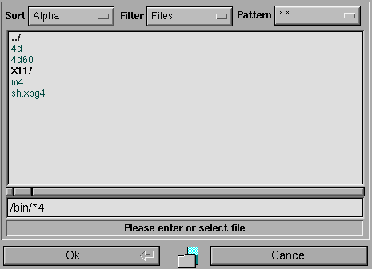
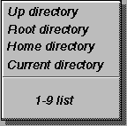
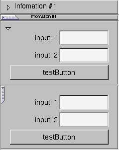

Fl_File_Dialog
Fl_File_Input
Fl_Dir
Fl_Pack
Fl_Pix_Box
Fl_Pix_Button
Fl_Frametab
Fl_NSlider
NOTE: STILL WORKING ON THIS FILE

#include <FL/Fl_File_Dialog.H>
int fl_file_dialog(const
char* title, char* pathAndFile, int
sortType=0, int
filterType=0,int
Mode);
Directory Bar (Slash Bar)
This will maintain a division at each directory, pressing
the button before will change the directory to the location represented
by the division
Quick Fix Menu (Right Mouse in input Field)
This will present a list of quick directory locations

Quick Fix Defaults
Fl_Menu pulldown[] = {
{"Up directory", 0},
{"Root directory", 0},
{"Home directory", 0},
... (rest are for stack of last accessed directories)
char selection[FL_MAX_PATH];
int slash;
strcpy(selection, "*.*"); //setlocation and/or path
slash = fl_file_dialog("Open File",selection,0,0,1);
if(slash) fl_message((char*)(selection+slash)); //the slash is 0 if nothing selected else it will be the length to the slash
int getFilename(char *out);
fillin out(path+file), return 0 if invalid selection else length to last slasint setFilename(char *in);
set the path and filename to usevoid input_callback_error(Dir_Callback* c=NULL, void* p=0)
callback if error conditionThis also contains the Quick Fix menus
example:
Fl_Input_File tDir;
char path_file[FL_MAX_PATH];
....
tDir(20, 65, 405, 35, "Resources File", path_file)
tDir.color(50);
tDir.align(5);
....Fl_Group_Window *w = (Fl_Group_Window *)v;
char selection[FL_MAX_PATH+200];
strcpy(selection, "*"); //setlocation and/or path
fl_file_dialog("Open File",selection,0,0,0);
tDir.setFilename(selection);
....
Fl_Dir( char *pathAndFile, int sortType = FL_SORT_NAME, int filterType = 0 );
constructor,insure the pathAndFile has enough roomfot the return valuesint Fl_Input_File::getFilename(char *out)
fillin out(path+file),return 0 if invalid selection else length to last slashint Fl_Input_File::setFilename(char *in)
Use the input string to change directory and update input cd(string)Fl_Dir_File *fileList()
return list of file entries (resets when reached nDirFiles total)Fl_Dir_File *fileListReset()
force the reset for the fileListFl_Dir_File *fileListSet(int num){ dirListCount=num; return NULL;}
set the list to a number(ie..tracking progress)Fl_Dir_File *fileInList(char *file,int filteronoff=1)
check if file is currently shown in dir List,use Spec&filter TRUE/FALSE;int dirSort(int type)
main function to do sortingint dirSetSort(int type)
set the sort typeint dirSetFilter(int flags)
set the Filter typeint dirToggelFilter(int flags)
toggle the current flag Filter ON/OFFint dirIsFilter(int flags)
return if Filter flag is setint dirSetDisplay(char *dir);
set the display flag for files maching patternvoid dirHaltScan()
request that the scan be stopped,done by GUIvoid dirResetScan()
reset the scan to start from start.void dir_callback1(Dir_Callback* c=NULL, void* p=0)
callback when directory changed and needs refreshdir_callback_error_(this,dir_user_data_error_);}
error ,callback when error conditioncd(const char *buf);
set the directory to this if neededint cdUp();
change up one directoryint cdRoot();
goto root directory or NT C:int cdHome();
look for env HOME and change if existsint cdCurrent();
change to current directoryint cdSub(char *);
change to a subdirectory, off the current directory (dont need full path) you can scan if a directory/File exist's and change into it (sub) or process it (file). changing up or down the directory tree. eg. cdSub("home"); if the user is in the root directory, it will try "/home"int tabComplete(const char *dir,char *buf);
try to do tab complete on the dir listint lenSlashPattern(char *ch,int &slash=tmpInt,int &hasPattern=tmpInt,int &prevSlash=tmpInt);
this function returns the length of str,slash,pattern,and prev slash (very usefull)int simpleExp( const char *s, const char *e, int CaseSens = TRUE );
Test for the pattern matchingint filename_expand(char *t,const char *f)
check for ~,$HOME etc..
see FL_File_Dialog example
Fl_Pack(int x,int y,int w ,int
h,const char *l = 0);
The usual X,Y,Width height and
title
int spacing()
return current spacing, This is
the space between each widget
void spacing(int i)
Set the amout of spacing ,the default
is 0.
uchar horizontal()
returns if the Pack is set horizontal.
type(int)
set the typeof the Pack this can
be Fl_Pack::HORIZONTAL , Fl_Pack::VERTICAL
Note: this is in the Main Lib now.
Fl_Frametab{Fl_Pix_Button* o = new Fl_Pix_Button(120, 40, 130, 30, "BUTTON1" ,&pixmap_rustNormal,&pixmap_rustDown,&pixmap_rustHilight);
o->color(51);
o->labelfont(4);
o->labelcolor(131);
o->callback(cb2,o);
}
{Fl_Pix_Button* o = new Fl_Pix_Button(120, 90, 130, 30, "BUTTON2" ,&pixmap_rustNormal,&pixmap_rustDown,&pixmap_rustHilight);
o->color(51);
o->labelfont(4);
o->labelcolor(131);
o->callback(cb2,o);
}

Open the frame tabvoid open();
Close the frametabint isOpen()
test for if the frametab is openvoid hilight_color(int col)
Get or set the hilight_color for the frametabvoid openSize(int siz)
Get or set the open size (height) of the then frametab widgetvoid openLabelHide(int yn)
Get or set if you want the lable to hide when the frame is openint openDiff()
Utility method to return the current height difference if when closed/open (-height/+height) - min frameExample:
Fl_Pack* pko = (Fl_Pack*) v;
pko->begin();
Fl_Frametab* fto = new Fl_Frametab(0, 40, 240, 130, "Infomation #1");
if(toggle_type == 1) toggle_type = 0;
else {
toggle_type =1;
fto->labelsize(9);
}
fto->type(toggle_type);
{Fl_Button* o = new Fl_Button(20, 130, 200, 30, "testButton");}
{Fl_Input* o = new Fl_Input(120, 60, 100, 30, "input: 1"); }
{Fl_Input* o = new Fl_Input(120, 95, 100, 30, "input: 2"); }
fto->end();
fto->close();
pko->end();
Get or Set the current hilight colorvoid bounds(float a, float b)
Set the bounds for this slider ,Min MaxFl_Boxtype slider()
Get or set the type of box to draw for the moving part of the slider.void calcButton(int &knob_x, int &knob_y, int &knob_w , int &knob_h,double val)
The color of the moving part (or of the notch in it for the nice sliders) is controlled by
selection_color(). Hilight color will draw when the mouse moves on to the widget.
Calculates wher the slider x,y,w,h is based on the value inputfloat slider_size()
Get or Set the dimensions of the moving piece of slider. This is the fraction of the size of the entire widget. If you set this to 1 then the slider cannotvoid alignTick( Fl_Align a)
move. The default value is .06
Set the color of the tickvoid majorTickFont( int p)
Set the Font of the Tickvoid majorTickFontSize(int p)
Set the Size of the font used fot the tick markingsvoid majorTickPrecision(int p)
Set the Precision of the tick (0-6)void minorTick(float tick)
Get or Set the minor Tick increment
void
majorTick(float tick)
Get or Set the major Tick incrementExample:
{ Fl_NSlider* o = dhoz = new Fl_NSlider(20, 30, 455, 30, "Demo Slider");
o->type(1);
o->labelsize(12);
o->minimum(-100);
o->maximum(1000);
o->callback((Fl_Callback*)cb_dhoz);
o->align(5);
o->majorTick(10);
o->minorTick(1);
o->ramp(47,52);
}
1.2